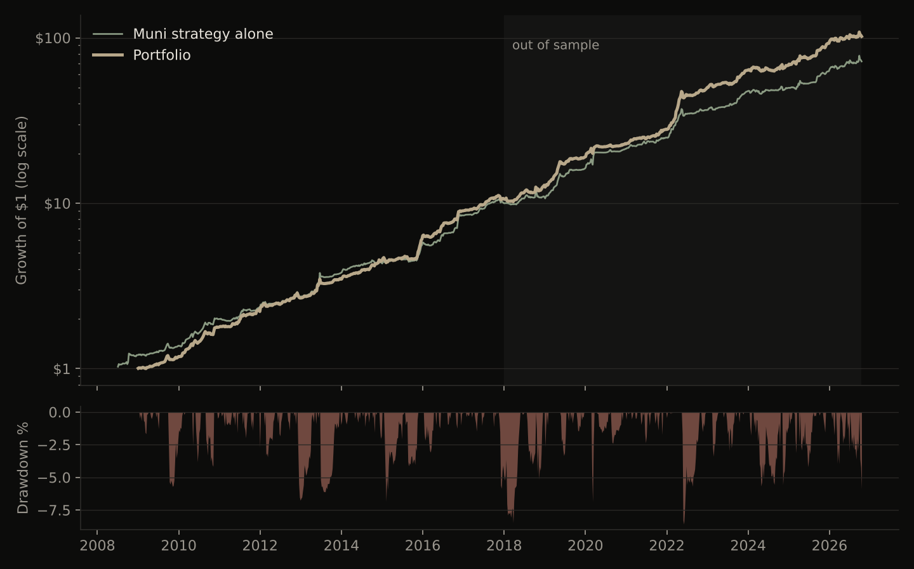

When Treasury yields move, municipal-bond ETFs (MUB, VTEB) price in about 70% of the move the same day and the rest over the next two to four days. I buy the muni ETF against a Treasury hedge after Treasuries rally, and sell it after they fall.
From 2018 to 2026, out of sample and after trading costs, this earned a Sharpe ratio of 1.9. Combined with four smaller commodity and flow strategies, the portfolio's Sharpe ratio was 2.25.
Prices move late where trading is slow, where information is easy to miss, or where some investors are forced to trade on a schedule. Each of those leaves a predictable price move that a patient trader can take.
Municipal bonds are the clearest case. Most go weeks without trading. Their prices come from vendor models that update from sparse trades, and muni ETF market makers anchor to those prices. The owners are mostly retail investors and funds buying for the tax exemption, and they rebalance slowly. Prices that update slowly, held by investors who trade slowly, should produce a lag behind Treasuries.
The same logic applies, more weakly, in energy markets (storage follows a calendar; weather hides the useful part of inventory data) and in pension funds' month-end rebalancing.
Each strategy tests one hypothesis with a clear economic reason. The last column is the out-of-sample result, 2018-2026, after costs.
| Hypothesis | Why it should hold | Sharpe 2018-26 | |
|---|---|---|---|
| H1 | Muni ETFs catch up to Treasury and stock moves over several days | Vendor-model pricing, slow tax-driven owners, persistent fund flows, start-of-month reinvestment of coupons | 1.86 |
| H2 | Energy calendar spreads earn a seasonal premium | Storage builds and draws on a calendar (heating, driving, refinery maintenance), so hedging demand is seasonal | 0.72 |
| H3 | Month-end pension rebalancing moves stocks and bonds predictably | About $20tn sits in fixed 60/40 mandates that must rebalance on a schedule | 0.62 |
| H4 | Gas prices under-react to the non-weather part of storage | About 80% of each weekly storage change is weather; the rest is small and easy to miss | 0.48 |
| H5 | Oil prices under-react to sustained crude inventory surprises | Single weeks are noisy, so a run of surprises is under-weighted | 0.19 |
H1 is the core of the portfolio. H5 worked until 2021 and has faded since; it keeps a small weight.
Each hypothesis becomes one strategy. Each strategy is scaled to the same risk, then weighted into one portfolio.
After a one-standard-deviation move in Treasuries, muni ETFs keep moving in the same direction for two to four more days.
| ETF | Same-day move vs Treasuries | 10-day move vs Treasuries | Share priced on day one |
|---|---|---|---|
| MUB | 0.30 | 0.41 | 73% |
| VTEB | 0.35 | 0.54 | 65% |
Move vs Treasuries is the regression beta of the muni ETF on IEF, measured over 1 day and over 10 days, 2008-2026.
Weekly returns after trading costs. The portfolio is scaled to 10% annual volatility using only past data, so returns grow or shrink in proportion to the risk taken. Every design decision used 2008-2017; 2018-2026 was held back as the test.
| Portfolio | 2008-17 | 2018-26 (test) | 2008-26 |
|---|---|---|---|
| Average annual return | 29.9% | 29.2% | 29.5% |
| Annual volatility | 10.5% | 11.7% | 11.1% |
| Sharpe ratio | 2.56 | 2.25 | 2.40 |
| Worst drawdown | -6.8% | -8.6% | -8.6% |
| Worst month | -6.8% | -5.9% | -6.8% |
| Months with a gain | 82% | 75% | 78% |
Returns are in excess of cash, before fees. At 5% volatility, halve the returns and drawdowns; the Sharpe ratio stays the same.

| Year | Portfolio | Muni only |
|---|---|---|
| 2009 | 17.4% | 13.4% |
| 2010 | 52.1% | 45.6% |
| 2011 | 24.1% | 14.3% |
| 2012 | 20.6% | 19.5% |
| 2013 | 29.9% | 39.2% |
| 2014 | 28.6% | 15.1% |
| 2015 | 35.9% | 27.8% |
| 2016 | 48.2% | 51.2% |
| 2017 | 18.1% | 18.6% |
| Year | Portfolio | Muni only |
|---|---|---|
| 2018 | 21.1% | 9.6% |
| 2019 | 47.9% | 47.6% |
| 2020 | 20.7% | 31.8% |
| 2021 | 21.6% | 16.8% |
| 2022 | 79.4% | 47.0% |
| 2023 | 27.3% | 30.1% |
| 2024 | 6.9% | 4.5% |
| 2025 | 35.9% | 26.1% |
| 2026 (to Oct) | 10.1% | 14.7% |
No losing calendar year. The strongest years (2010, 2016, 2022) had large Treasury moves.
| Strategy | 2008-17 | 2018-26 (test) | 2008-26 |
|---|---|---|---|
| H1 Muni catch-up | 2.01 | 1.86 | 1.90 |
| H2 Energy seasonal spreads | 0.78 | 0.72 | 0.75 |
| H3 Month-end rebalancing | 0.92 | 0.62 | 0.79 |
| H4 Gas storage, weather removed | -0.44 | 0.48 | 0.28 |
| H5 Crude inventory | 0.81 | 0.19 | 0.50 |
| Portfolio | 2.56 | 2.25 | 2.40 |
H4 starts in 2016 because the gas storage series begins in 2010 and the weather model needs history to train. H2 ends in April 2024 when the futures-curve data stops.
The settings were picked from 32 variants using 2008-2017 data only. Across all 32, the median Sharpe ratio in 2018-2026 was 1.73.
| Muni strategy, daily, after costs | 2008-17 | 2018-26 |
|---|---|---|
| As built | 1.84 | 1.85 |
| Trading costs doubled | 1.65 | 1.62 |
| Trading costs tripled | 1.47 | 1.38 |
| MUB only | 1.77 | 1.58 |
| VTEB only | 2.06 | 1.92 |
| Placebo: Treasury moves from a year earlier | 0.07 | -0.07 |
The placebo uses the same model on unrelated Treasury moves. It earns nothing, which is what a real effect should show.
All data is free and public: Yahoo Finance for ETF and futures prices, the US Energy Information Administration for futures curves, crude stocks and gas storage, and NOAA for weather. The full analysis reruns from scratch with two commands. Code, methodology and every table are on GitHub.